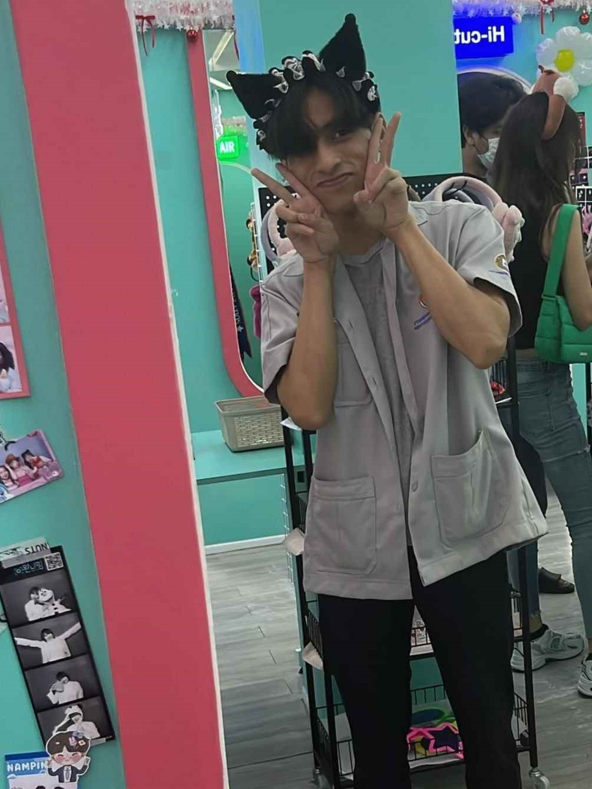

Black cat ears
ในภาพนี้ผมเปลี่ยนชุดละครับเดี๋ยวจารเบื่อชายหนุ่มในภาพดูมีบุคลิกที่สดใสและขี้เล่นใช่นั้นผมเอง ผมมีรอยยิ้มกว้างที่แสดงถึงความสุขและความสนุกสนาน ดวงตาของผมถ้าอาจารณ์มองดีๆมันเปล่งประกายด้วยความร่าเริงและมีความเป็นมิตร การสวมใส่หูแมวสีดำนั้นทำให้ผมดูเหมือนตัวละครจากอนิเมะหรือการ์ตูนเพื่อนผมบอกมาอย่างนั้นอาจารณ์อย่าเชื่อเลยนะครับ ซึ่งเพิ่มเสน่ห์และความน่ารักให้กับผมมากขึ้นหรือเปล่า
HOME